مهارات الاتصال والعرض والتقديم
كل يوم · ٣٠ دقيقة
- الحيل: اقرأ ٣ بطاقات
- محاضرة واحدة: الملاحظات ثم أسئلتها
- الأسئلة المتكررة: ١٠ أسئلة، جاوب قبل ما تشوف الإجابة
- تدريب مختلط: ٢٠ سؤال
ليلة الامتحان
ملخص الحيل، ثم كل سؤال عليه علامة ×٣ أو أكثر.
×ن = السؤال جاء في ن امتحانات مختلفة.
الأنماط التي تتكرر في الامتحانات، الأكثر تكرارًا أولًا.
1 · جدول مسئوليات مقدم العرض
في 9 من 9 امتحانات
الفخ: عبارات صح وخطأ تنقل المهمة إلى العمود الخطأ، أو تنفي دور المقدم في البيئة.
القاعدة: احفظ الجدول: 3 أوقات × 4 جوانب.
| مقدم العرض | الجمهور | المحتوى | البيئة | |
|---|---|---|---|---|
| قبل | إعداد نفسي وعقلي وبدني وتدريب | تحليل الجمهور وتكييف المادة | إعداد المادة، مراجعة، تدريب، خطة بديلة | إعداد البيئة |
| أثناء | مهارات العرض الفعال | التفاعل مع الجمهور | شرح المحتوى وليس قراءته | التعامل بحرفية والتغلب على المشكلات |
| بعد | تقييم الذات ومعالجة الأخطاء | إيجاد طرق للتواصل | ملخصات (handout) | التأكد من إعادة النظام |
- لا يتدخل مقدم العرض في إعداد البيئة المحيطة ← خطأ
- تمتد مسئوليات مقدم العرض إلى ما بعد العرض ← صح
- مراجعة الشرائح والتدرب على إلقائها من مهامه تجاه نفسه ← خطأ تجاه مادة العرض
- اكتب خطواتك قبل العرض: نفسك، الجمهور، المحتوى، البيئة ← الصف الأول من الجدول
📖 المحاضرة 4، شريحة 7.
2 · ماذا تعرف عن جمهورك؟
في 7 من 9 امتحانات
الفخ: "يستقبل الجمهور المعلومات بطريقة متشابهة" خطأ متكرر.
القاعدة: 7 أسئلة قبل العرض: من هم، لماذا أتوا، ماذا يتوقعون، كيف أجذب انتباههم، متى يملون، كيف يتذكرون، كيف يستقبلون المعلومات. وطرق الاستقبال 3: الباحثون عن التفاصيل، جرب كي تتعلم، اسمح لي أن أناقش.
- يستقبل الجمهور المعلومات بطريقة متشابهة ← خطأ بطرق مختلفة
- يجب أن يعرف مقدم العرض لماذا يأتي الجمهور ← صح
- مستويات الذاكرة ← قصيرة جدًا: صور وإعادة 3 مرات. قصيرة: أمثلة ومقارنات وخبرة شخصية. متوسطة: أسئلة وفيديو ولوحة قلابة. طويلة: مصادر للمتابعة
📖 ملخص Sheko، صفحتا 2 و3.
3 · الإنصات والوصايا العشر
في 6 من 9 امتحانات
القاعدة: الإنصات مهارة تنمّى بالتدريب والممارسة. الوصية الأولى والأخيرة واحدة: توقف عن الكلام قليلًا.
- الإنصات مهارة يمكن تنميتها بالتدريب والممارسة ← صح
- اذكر 4 وصايا ← توقف عن الكلام، أرح الطرف الآخر، أظهر رغبتك في الاستماع، لا تشوش
- زميل انتقد عملك فرددت بعصبية ← احتفظ بهدوئك، رحب بالنقد، أنصت وحلله، لا تجادل
📖 المحاضرة 3، شرائح 3 و12 و14.
4 · تدريب الكبار وتدريب الصغار
في 6 من 9 امتحانات
الفخ: ينقل صفة الكبار إلى الصغار، خصوصًا "الأهداف المرنة".
| الكبار | الصغار | |
|---|---|---|
| المقدم | ميسّر (facilitator) | مدرس أو محاضر |
| المتعلم | مستقل | معتمد على غيره |
| الخبرة | لديهم خبرة يسهمون بها | بلا خبرة |
| المشاركة | حيوية للنجاح | قليلة |
| الأهداف | مرنة | محددة مسبقًا وغير مرنة |
| مصدر الأفكار | المشاركون | المدرب |
- أهداف تدريب الصغار مرنة ويمكن تعديلها ← خطأ
- يرتكز تدريب الصغار على المعلم كمصدر أساسي ← صح
📖 المحاضرة 2، شرائح 4–8.
5 · الاتصالات الرسمية
في 6 من 9 امتحانات
القاعدة: الرسمية 3 أنواع: رأسية (مستويات متتابعة)، أفقية (مستويات متماثلة)، مائلة (مستويات مختلفة). وغير الرسمية تقوم على العلاقات الشخصية.
- الاتصال بين المدير ومرؤوسيه مائل وهو من صور غير الرسمية ← خطأ الرسمية
- من أمثلة المائلة: من المرؤوسين إلى رؤسائهم ← صح حسب مفتاح 2018، لكنه محل خلاف
📖 المحاضرة 1، شريحة 19.
6 · معوقات الاتصال
في 5 من 9 امتحانات
القاعدة: من المعوقات: اللغة الفنية، عدم المصداقية، إدراك القيمة، الإنصات الانتقائي، الاتصال من اتجاه واحد، اختلاف الإطار المرجعي، ضغوط الوقت.
- الاتصال من جانب واحد هو شرط نجاح عملية الاتصال ← خطأ هو من المعوقات
- اذكر أربعة أشكال من المعوقات ← أي 4 من القائمة
📖 المحاضرة 4، شريحة 2.
7 · التطور التاريخي للاتصال
في 4 من 9 امتحانات
القاعدة: بالترتيب: اللغة الشفوية ← الكتابة (الفراعنة، الطباعة) ← التليفون والراديو والتليفزيون ← الحاسب الآلي ← الأقمار الصناعية ← الإنترنت.
📖 المحاضرة 1، شريحة 17.
8 · عناصر الاتصال وأهدافه
في 3 من 9 امتحانات
الفخ: كلمة "فقط" في صح وخطأ.
القاعدة: العناصر: مرسل، مستقبل، رسالة، وسيلة. الأهداف KSA: معرفة ومهارات واتجاهات.
- تهدف عملية الاتصال إلى نقل المعلومات فقط ← خطأ
- وضح أهداف عملية الاتصال ← Knowledge و Skills و Attitude
📖 المحاضرة 1، شريحة 18؛ ملخص Sheko، صفحة 2.
9 · مبادئ الاتصال الفعال: 6 أسئلة
في 2 من 9 امتحانات
- لماذا؟ ← الهدف
- ماذا؟ ← مضمون الرسالة
- من؟ ← الشخص المستهدف
- كيف؟ ← الوسيلة المناسبة
- متى؟ ← الوقت المناسب
- أين؟ ← المكان المناسب
📖 المحاضرة 4، شريحة 4.
ملخص ليلة الامتحان · القواعد الـ9
- جدول المسئوليات: قبل وأثناء وبعد × النفس والجمهور والمحتوى والبيئة.
- 7 أسئلة عن الجمهور، و3 طرق استقبال، و4 مستويات ذاكرة.
- الإنصات مهارة، والوصية الأولى والأخيرة: توقف عن الكلام.
- الكبار: ميسّر وأهداف مرنة. الصغار: مدرس وأهداف ثابتة.
- الرسمية: رأسية وأفقية ومائلة.
- الاتصال من اتجاه واحد عائق، وليس شرطًا للنجاح.
- التاريخ: شفوية، كتابة، تليفون وراديو، حاسب، أقمار، إنترنت.
- العناصر: مرسل ومستقبل ورسالة ووسيلة. الأهداف: KSA.
- لماذا وماذا ومن وكيف ومتى وأين.
حيل على أجزاء بعد المحاضرة الخامسة (7)
من ملخص Sheko (المحاضرات 6–9 والأسئلة المتنوعة). ليست ضمن المحاضرات الخمس.
الاتصال غير اللفظي: 7 و55 و38
في 7 من 9 امتحانات
الفخ: "اللفظي هو الأهم" تبدو منطقية، لكنها خطأ.
القاعدة: اللفظي 7٪ فقط، وغير اللفظي 93٪: حركات الجسد 55٪ ونبرة الصوت 38٪.
- الاتصال اللفظي يشكل الجانب الأهم ← خطأ
- اشرح أهمية الاتصالات غير اللفظية وأنواعها ← النسب، ثم لغة الجسد (المظهر، العينان، الحركة، الأيدي، الوجه، الوضعية)، ثم الصوت، ثم اللمس والمسافات
📖 ملخص Sheko، صفحة 4.
الشخصيات الصعبة
في 6 من 9 امتحانات
القاعدة: الأنماط الخمسة: كثير الكلام، كثير الهرج والهزار، كثير الأسئلة، غير المتفاعل، الباحث عن الأخطاء. والقواعد العامة: حافظ على هدوئك، اعرف قيمة نفسك، تجنب المواجهة العنيفة، تعاطف دون موافقة، اختر الحل الوسط.
- مع الشخصية الصامتة نستخدم الأسئلة المفتوحة ← صح
- اذكر نمطين مع طريقة التعامل ← كثير الكلام: اشكره ووجّه الحديث لغيره. غير المتفاعل: أسئلة مفتوحة وإشراكه
📖 ملخص Sheko، صفحة 4.
الصوت والجسد
في 6 من 9 امتحانات
الفخ: كلمة واحدة تتغير: "يقلل" بدل "يزيد".
القاعدة: التنويع في الصوت يزيد التركيز، والصوت الثابت يسبب النعاس. الصمت للحظات يعطي فرصة للاستيعاب. الوقفة المعتدلة تعبر عن الثقة.
- التنوع في نبرة الصوت يقلل من تركيز الجمهور ← خطأ يزيد
- يجب الصمت للحظات لإعطاء فرصة للاستيعاب ← صح
- وضعية الجسم المعتدلة تعبر عن الثقة والارتياح ← صح
- مقدم لا ينظر للجمهور، ووقفته متراخية، وصوته منخفض ← يضعف الثقة والانتباه والفهم. الحل: وزّع النظر، قف باعتدال، نوّع الصوت
📖 ملخص Sheko، صفحة 4.
ورش العمل والأعداد الصغيرة
في 6 من 9 امتحانات
القاعدة: أساليب الأعداد الصغيرة: ورش عمل تطبيقية، بريزنتيشن صغير، مناقشة. وأدوار المجموعة: Leader و Presenter و Timer و Writer.
- ورش العمل تناسب المجموعات الكبيرة أكثر من الصغيرة ← خطأ العكس
- وضح توزيع الأدوار بين أفراد المجموعة ← القائد، المقدم، ضابط الوقت، الكاتب
📖 ملخص Sheko، صفحة 5.
تنظيم قاعة العرض
في 5 من 9 امتحانات
القاعدة: السؤال يطلب الرسم: محاضرة = صفوف أمام المقدم. مناقشة = طاولة تحيط بها الكراسي. عرض صغير = كراسي على شكل U.
- وضح بالرسم الأشكال المختلفة لتنظيم القاعة ← ارسم الأشكال الثلاثة واكتب اسم كل شكل
📖 ملخص Sheko، صفحة 5 (افتح الصفحة وانظر الرسم).
جذب الانتباه وأول انطباع
في 4 من 9 امتحانات
القاعدة: الجذب: افتتاحية قوية، كسر الرتابة، الدعابة، القصص، التشبيهات، النماذج، الأسئلة. أول انطباع: مظهر مناسب، التعريف بنفسك، الحماس، الثقة، الهدوء.
- اذكر بعض طرق جذب انتباه الجمهور ← أي عدد من القائمة
- أفكار لصناعة أول انطباع جيد ← القائمة الثانية
📖 ملخص Sheko، صفحة 3.
العصف الذهني والمناقشة
في 4 من 9 امتحانات
الفخ: الفرق كله في الكتابة والتعليق.
| العصف الذهني | المناقشة | |
|---|---|---|
| الكتابة | تُكتب الأفكار | شفهية، ولا يشترط كتابتها |
| التعليق | لا تعليق، صحيحة كانت أو خاطئة | تعليق ومناقشة وتعديل الخطأ |
📖 ملخص Sheko، صفحة 5.
المحاضرة 1 · الاتصال والتواصل
أهداف المحاضرة
- التعرف على مفهوم وأهمية الاتصال
- عناصر الاتصال
- أشكال ومهارات الاتصال
- معرفة معوقات الاتصال
- كيف يصبح الاتصال فعالا
شريحة 02
ما هو الاتصال؟
الاتصال هو تلك العملية التي يتم من خلالها التعبير وتبادل الأفكار والمفاهيم والحقائق والآراء والمهارات والاتجاهات بين طرفين أو أكثر، باستخدام طرق وأساليب معينة، سواء كانت منظورة أو غير منظورة.
- الاتصال عملية (ليس حدثًا واحدًا).
- يتم فيها التعبير وتبادل:
- الأفكار
- المفاهيم
- الحقائق
- الآراء
- المهارات
- الاتجاهات
- بين طرفين أو أكثر.
- بطرق وأساليب معينة: منظورة أو غير منظورة.
أسئلة تفكير على الشريحة:
- هل قابلت يوما شخصا لم تستطع التواصل معه؟
- هل سبق إساءة فهمك؟
شريحة 03–05
ما أهمية الاتصال والتواصل؟
الشريحة تطرح السؤال ما أهمية الاتصال والتواصل؟ وتجيب عنه بصورة فقط (بلا نص).
- الصورة: جدار يفصل بين مكتبين.
- المكتب الأول: شئون الطلبة.
- المكتب الثاني: الشئون المالية والإدارية.
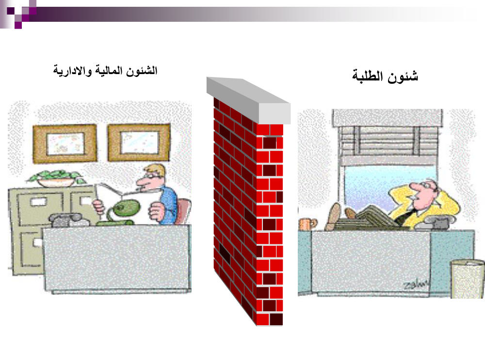
شريحة 06–07
التطور التاريخي للاتصال
السؤال على الشريحة: ما هو التطور التاريخي للاتصال؟ وتسبقه وتتبعه صور بلا نص.
صور بلا نص (شرائح 08–11 و13–16):
- شرائح 08–11: قافلة جمال، ثم سيارة قديمة، ثم سيارة حديثة، ثم طائرة (مصر للطيران).
- شريحة 13: حمامة.
- شريحة 14: زجاجة بداخلها رسالة.
- شريحة 15: عنوانها الإتصالات، وفيها حاسوب محمول وهواتف وجهاز كمبيوتر، وعبارة ASP MapServices.
- شريحة 16: أكوام من الهواتف المحمولة القديمة.
ترتيب مراحل التطور (شريحة 17):
- اللغة الشفوية
- الكتابة (الفراعنة – اختراع الطباعة)
- وسائل الاتصال المختلفة (التليفون – الراديو – التليفزيون)
- الحاسب الآلي
- الأقمار الصناعية
- شبكة المعلومات الدولية (الانترنت)
شريحة 08–17
أهداف الاتصال (Communication Goals)
- K — knowledge (المعرفة)
- S — skills (المهارات)
- A — attitude (الاتجاه)
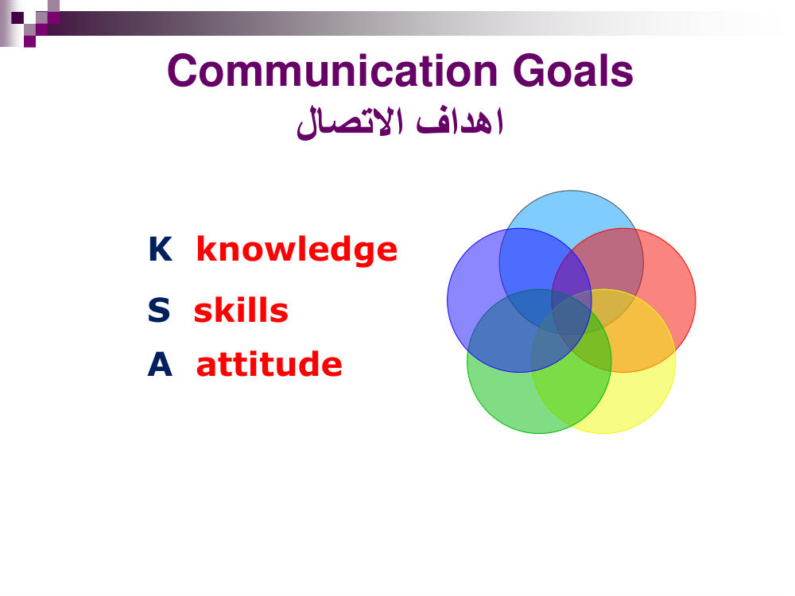
شريحة 18
أنواع الاتصالات التنظيمية
- الاتصالات الرسمية، وتنقسم إلى:
- الاتصالات الرأسية
- الاتصالات الأفقية
- الاتصالات المائلة
- الاتصالات غير الرسمية
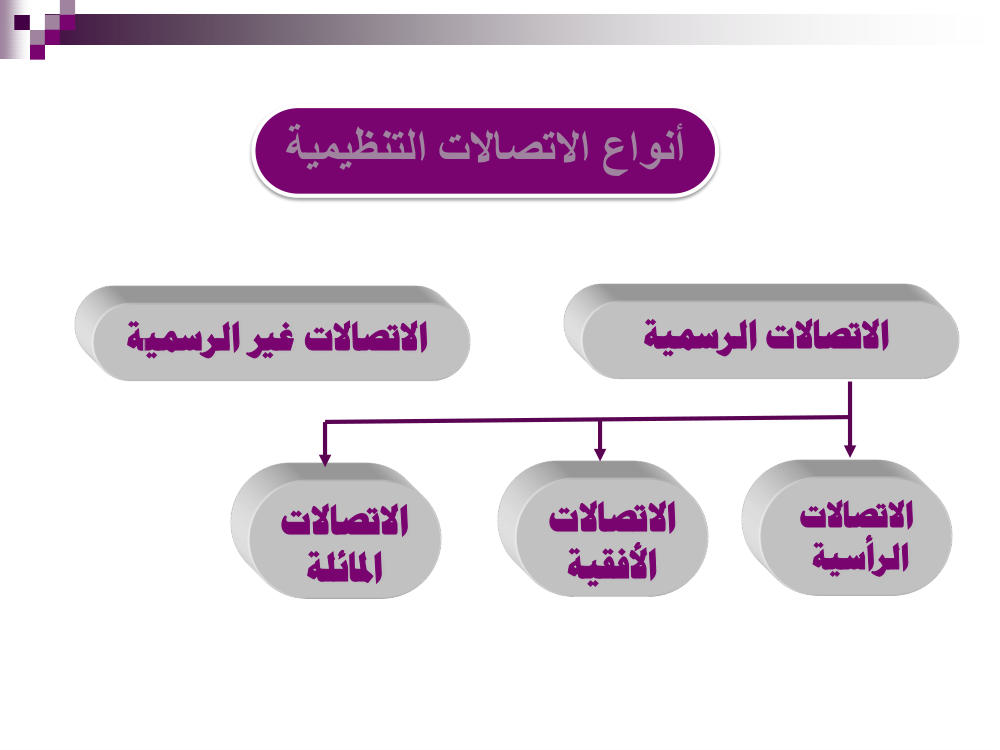
شريحة 19
أهم ما يجب حفظه
- الاتصال عملية تبادل الأفكار والمفاهيم والحقائق والآراء والمهارات والاتجاهات.
- يتم بين طرفين أو أكثر.
- يستخدم طرقًا وأساليب معينة منظورة أو غير منظورة.
- أهداف المحاضرة: المفهوم والأهمية، العناصر، الأشكال والمهارات، المعوقات، الاتصال الفعال.
- مثال غياب الاتصال: جدار بين شئون الطلبة والشئون المالية والإدارية.
- أول مراحل التطور: اللغة الشفوية.
- ثم الكتابة (الفراعنة – اختراع الطباعة).
- ثم التليفون والراديو والتليفزيون.
- ثم الحاسب الآلي.
- ثم الأقمار الصناعية.
- ثم شبكة المعلومات الدولية (الانترنت).
- أهداف الاتصال KSA: knowledge – skills – attitude.
- الاتصالات التنظيمية نوعان: رسمية وغير رسمية.
- الرسمية ثلاثة أنواع: رأسية وأفقية ومائلة.
المحاضرة 2 · الاتصال والتواصل: تدريب الكبار وتدريب الصغار
المدرب وأسلوب التعلم
| وجه المقارنة | تدريب الكبار | تدريب الصغار |
|---|---|---|
| اسم المدرب | Instructors are called "facilitators" | Instructors are called "teachers" or "lecturers" |
| أسلوب التعلم | Independent learning style | Dependent learning style |
شريحة 02–03
الخبرة والمشاركة
| وجه المقارنة | تدريب الكبار | تدريب الصغار |
|---|---|---|
| الخبرة | It is assumed that the learners have experience to contribute | It is assumed that learners are inexperienced |
| المشاركة | Participants involvement is vital to success | Participants contribute little to achievements |
شريحة 04–05
الأهداف والوقت ومصدر الأفكار
| وجه المقارنة | تدريب الكبار | تدريب الصغار |
|---|---|---|
| الأهداف | Objectives are flexible | Objectives are predetermined and inflexible |
| الوقت والإيقاع | Learners influence timing and pace in a learner-centred approach | Trainer controls time and pace |
| مصدر الأفكار والأمثلة | Participants are seen as primary resource for ideas and examples | Trainer is seen as the primary resource who provides ideas and examples |
شريحة 06–08
أهم ما يجب حفظه
- مدرب الكبار اسمه facilitator.
- مدرب الصغار اسمه teacher أو lecturer.
- الكبار: Independent learning style.
- الصغار: Dependent learning style.
- الكبار لديهم خبرة يساهمون بها.
- الصغار يُفترض أنهم بلا خبرة (inexperienced).
- الكبار: مشاركة المتدربين ضرورية للنجاح.
- الصغار: المشاركون يساهمون قليلا في الإنجاز.
- الكبار: الأهداف مرنة (flexible).
- الصغار: الأهداف محددة مسبقا وغير مرنة.
- الكبار: المتعلمون يؤثرون في التوقيت والإيقاع (learner-centred).
- الصغار: المدرب يتحكم في الوقت والإيقاع.
- الكبار: المشاركون هم المصدر الأساسي للأفكار والأمثلة.
- الصغار: المدرب هو المصدر الأساسي للأفكار والأمثلة.
المحاضرة 3 · الإنصات الفعال (Good Listening)
الإنصات الفعال Good Listening
- عنوان المحاضرة: الإنصات الفعال (Good Listening).
- الإنصات الفعال له فرعان: الإنصات والاستماع.
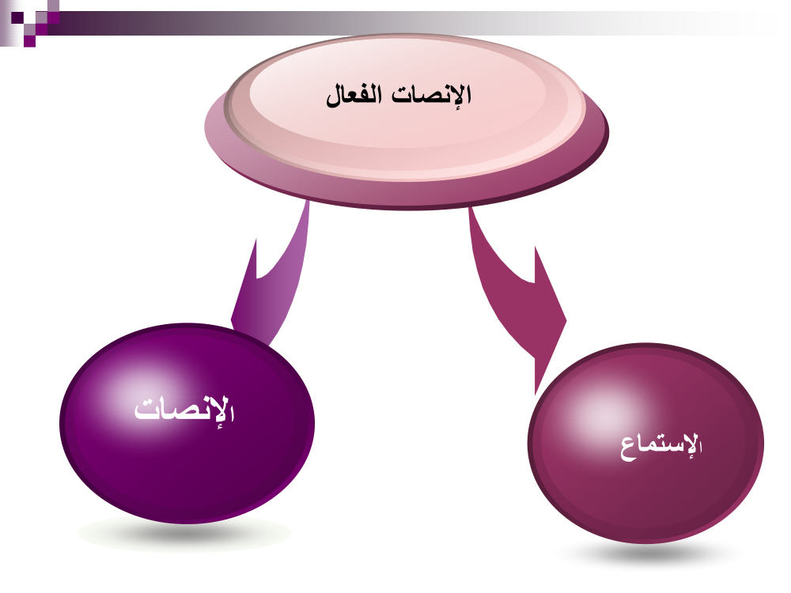
شريحة 01–02
الإنصات مهارة يمكن تنميتها
- الإنصات مهارة يمكن تنميتها من خلال التدريب والممارسة.
- له مظاهر يستدل منها عليه، مثل:
- الإيماءات
- تركيز العين
- استخدام كلمات قصيرة بشكل متتالٍ
- وغيرها
- دور الإنصات: إعطاء الطرف الآخر فرصة الإرسال والتعبير.
- ويساعد أيضًا على الاستيعاب والفهم.
- ومن ثم تحديد الاستجابة المناسبة.
شريحة 03
الوصايا العشر في الإنصات الجيد
- تتوقف عن الكلام قليلاً
- حاول أن تريح الطرف الآخر
- أظهر للطرف الآخر أنك ترغب في الاستماع إليه
- لا تشوش على عملية الإنصات
- ضع نفسك مكان الطرف الآخر
- ركز وتتبع بصبر
- احتفظ بهدوئك
- تقبل الانتقادات والاعتراضات
- اسأل في الوقت المناسب
- توقف عن الكلام قليلاً
شريحة 04
الوصية 1: تتوقف عن الكلام قليلاً
- أنت لا تستطيع الاستماع وأنت تتكلم.
شريحة 05
الوصية 2: حاول أن تريح الطرف الآخر
- امنح له الفرصة لأن يتكلم مثلك.
- امنح له الفرصة ليقول ما يود التعبير عنه.
- شجع الطرف الآخر لأن يعبر عن نفسه.
شريحة 06
الوصية 3: أظهر للطرف الآخر أنك ترغب في الاستماع إليه
- استخدم لغة الجسم، وخاصة تعبيرات وجهك، لتوحي للطرف الآخر أنك مهتم للاستماع إليه.
- لا تنشغل عنه بأشياء أخرى عند الاستماع إليه، وتفرغ له تمامًا.
- أنصت جيدًا لكي تتفهم الموقف وليس لمجرد الاستماع.
شريحة 07
الوصية 4: لا تشوش على عملية الإنصات
- لا تفر أوراقك أو تنفر بأصابعك.
- يكون أفضل لو أغلقت الباب أو الشباك.
شريحة 08
الوصية 5: ضع نفسك مكان الطرف الآخر
- تصور أنك تتكلم بدلاً منه حتى تأخذ الإحساس وتتعاطف معه.
- امنحه الوقت الكافي للعرض.
- تجنب سرعة التعميم.
شريحة 09
الوصية 6: ركز وتتبع بصبر
- لا تقاطع المتحدث.
- حاول قراءة ما لم يقله صراحة.
- ركز على الأفكار الأساسية.
- لا تعبر برسائل غير لفظية عن السأم.
- تنبه إلى تعبيراته غير اللفظية.
- لا تنصرف عنه.
- تنبه إلى تحيزاته.
شريحة 10
الوصية 7: احتفظ بهدوئك
- تجنب تصنيف المتحدث وإطلاق الأحكام القطعية عليه.
- لا تغضب أو تفقد أعصابك.
- الغاضب يركز على المعاني الخطأ أو يسيء تفسير الكلمات.
- الغاضب يفقد القدرة على التركيز والاستيعاب.
شريحة 11
الوصية 8: تقبل الانتقادات والاعتراضات
- أظهر ترحيبك بالاعتراض أو النقد.
- لا تجادل، ففي الجدل خسارة للطرفين.
- أنصت جيدًا للاعتراض أو النقد وحاول تحليله منطقيًا.
- لا تنفعل بمجرد سماع النقد أو الاعتراض.
شريحة 12
الوصية 9: اسأل في الوقت المناسب
- الأسئلة قد تشجع الطرف الآخر على الاسترسال.
- الأسئلة دليل على الاستيعاب الناتج عن الإنصات.
- الأسئلة تساعدك على الحصول على معلومات أكثر وضوحًا.
شريحة 13
الوصية 10: توقف عن الكلام قليلاً
- هي الوصية الأولى والأخيرة، وتعتمد عليها جميع الوصايا الأخرى.
- لديك أذنين ولسان واحد، فاستمع أكثر مما تتحدث.
- إذا كان الكلام من فضة، فالسكوت من ذهب.
شريحة 14
أهم ما يجب حفظه
- الإنصات الفعال له فرعان: الإنصات والاستماع.
- الإنصات مهارة تُنمّى بالتدريب والممارسة.
- مظاهر الإنصات: الإيماءات، تركيز العين، كلمات قصيرة متتالية.
- الإنصات يعطي الطرف الآخر فرصة الإرسال والتعبير ويساعد على الفهم وتحديد الاستجابة المناسبة.
- الوصايا العشر: توقف، أرح الطرف الآخر، أظهر رغبتك، لا تشوش، ضع نفسك مكانه، ركز بصبر، اهدأ، تقبل النقد، اسأل في وقته، توقف.
- أنت لا تستطيع الاستماع وأنت تتكلم.
- أظهر الاهتمام بلغة الجسم وتعبيرات الوجه، ولا تنشغل بأشياء أخرى.
- لا تشوش: لا تفر أوراقك ولا تنفر بأصابعك، وأغلق الباب أو الشباك.
- ضع نفسك مكانه: خذ الإحساس وتعاطف، وامنحه وقتًا كافيًا، وتجنب سرعة التعميم.
- ركز بصبر: لا تقاطع، اقرأ ما لم يُقل صراحة، وانتبه لتعبيراته غير اللفظية وتحيزاته.
- الغاضب يركز على المعاني الخطأ ويفقد القدرة على التركيز والاستيعاب.
- تقبل النقد: رحب به، لا تجادل (في الجدل خسارة للطرفين)، حلله منطقيًا ولا تنفعل.
- الأسئلة تشجع على الاسترسال، وتدل على الاستيعاب، وتعطي معلومات أوضح.
- الوصية الأولى والأخيرة: توقف عن الكلام قليلاً، وعليها تعتمد كل الوصايا.
- لديك أذنان ولسان واحد؛ وإذا كان الكلام من فضة فالسكوت من ذهب.
المحاضرة 4 · الاتصال والتواصل
بيانات المحاضرة
- العنوان: الاتصال والتواصل.
- المحاضر: د/ أحمد الحديدي، مدرس قسم هندسة الإنشاءات، كلية الهندسة، جامعة طنطا.
شريحة 01
معوقات الاتصال (What causes distortion?)
ما الذي يسبب تشويه الاتصال؟ عشرة أسباب:
- اللغة الفنية
- عدم المصداقية
- إدراك القيمة
- الإنصات الانتقائي
- الاتصال من اتجاه واحد
- اختلاف الإطار المرجعي
- ضغوط الوقت
- الأعباء الزائدة
- تنقية المعلومات
- اختلاف المستوى الوظيفي
شريحة 02
مقولة عن الإعداد
- "Failure to prepare is to prepare your failure" — Benjamin Franklin.
- "الفشل في الإعداد هو أن تعد لفشلك" — بنجامين فرانكلين.
شريحة 03
مبادئ الاتصال الفعال
الاتصال الفعال بين طرفين يجب أن يستند إلى المبادئ الآتية:
| السؤال | المطلوب تحديده |
|---|---|
| لماذا؟ | تحديد الهدف |
| ماذا؟ | تحديد مضمون الرسالة |
| من؟ | الشخص المستهدف |
| كيف؟ | الوسيلة المناسبة |
| متى؟ | الوقت المناسب |
| أين؟ | المكان المناسب |
شريحة 04
عناصر العرض الفعال
أربعة عناصر متداخلة:
- مقدم العرض
- الجمهور
- محتوى مادة العرض
- البيئة المحيطة
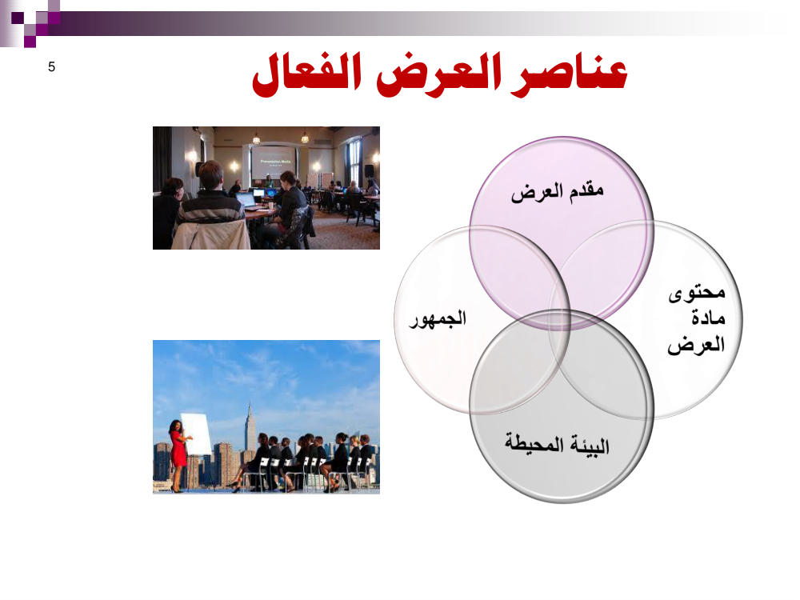
شريحة 05
مراحل إعداد وتقديم العرض
العرض له ثلاث مراحل:
- قبل العرض
- أثناء العرض
- بعد العرض
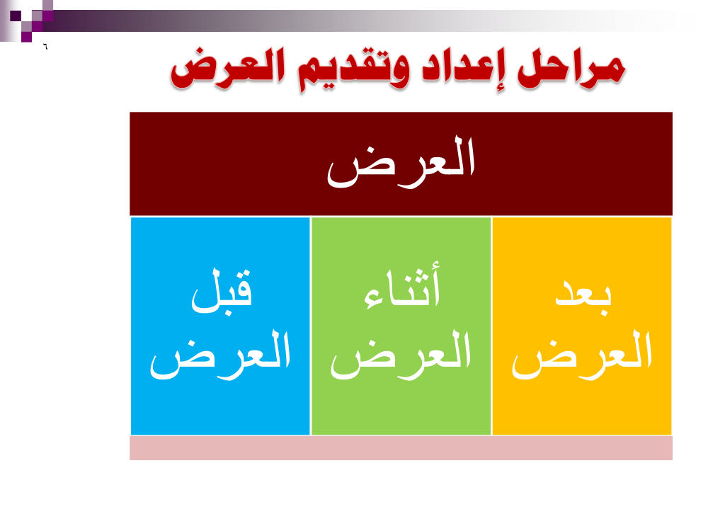
شريحة 06
مسئوليات ومهام مقدم العرض
لكل مرحلة مهام تجاه العناصر الأربعة:
| المرحلة | مقدم العرض | الجمهور | محتوى مادة العرض | البيئة المحيطة |
|---|---|---|---|---|
| قبل العرض | الإعداد النفسي، إعداد عقلي وتدريب جيد، إعداد بدني | تحليل الجمهور وتكييف المادة حسب الاحتياج | إعداد المادة، المراجعة، التدريب، إعداد خطة بديلة | إعداد البيئة |
| أثناء العرض | مهارات العرض الفعال | التفاعل مع الجمهور | شرح المحتوى وليس قراءته | التعامل بحرفية، التغلب على المشكلات |
| بعد العرض | تقييم الذات ومعالجة الأخطاء | إيجاد طرق للتواصل | ملخصات (handout) | التأكد من إعادة النظام |
شريحة 07
أهم ما يجب حفظه
- معوقات الاتصال (What causes distortion?) عشرة: اللغة الفنية، عدم المصداقية، إدراك القيمة، الإنصات الانتقائي، الاتصال من اتجاه واحد.
- وتكملتها: اختلاف الإطار المرجعي، ضغوط الوقت، الأعباء الزائدة، تنقية المعلومات، اختلاف المستوى الوظيفي.
- "Failure to prepare is to prepare your failure" — Benjamin Franklin.
- "الفشل في الإعداد هو أن تعد لفشلك" — بنجامين فرانكلين.
- مبادئ الاتصال الفعال بين طرفين ستة: لماذا، ماذا، من، كيف، متى، أين.
- لماذا = تحديد الهدف، وماذا = تحديد مضمون الرسالة.
- من = الشخص المستهدف، وكيف = الوسيلة المناسبة.
- متى = الوقت المناسب، وأين = المكان المناسب.
- عناصر العرض الفعال أربعة: مقدم العرض، الجمهور، محتوى مادة العرض، البيئة المحيطة.
- مراحل العرض ثلاث: قبل العرض، أثناء العرض، بعد العرض.
- قبل العرض: إعداد نفسي وعقلي وبدني للمقدم، تحليل الجمهور، إعداد المادة وخطة بديلة، إعداد البيئة.
- أثناء العرض: مهارات العرض الفعال، التفاعل مع الجمهور، شرح المحتوى وليس قراءته، التعامل بحرفية مع المشكلات.
- بعد العرض: تقييم الذات ومعالجة الأخطاء، إيجاد طرق للتواصل، ملخصات (handout)، التأكد من إعادة النظام.
المحاضرة 5 · الاتصال والتواصل: الإعداد للعرض ومعرفة الجمهور
بيانات المحاضرة
- العنوان: الاتصال والتواصل.
- المحاضر: د/ أحمد الحديدي، مدرس قسم هندسة الإنشاءات، كلية الهندسة، جامعة طنطا.
شريحة 01
مسئوليات ومهام مقدم العرض (مراجعة)
نفس جدول المحاضرة الرابعة: قبل وأثناء وبعد العرض × مقدم العرض، الجمهور، المحتوى، البيئة. المحاضرة الخامسة تشرح خانة «قبل العرض».
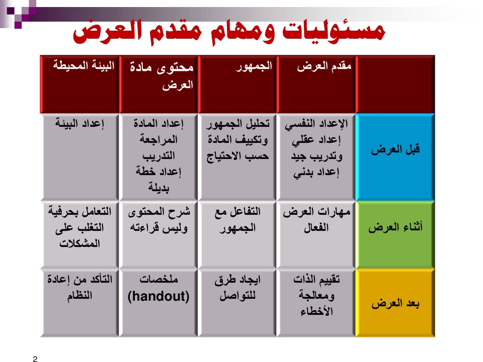
شريحة 02
كن مستعدًا: أهمية الإعداد قبل العرض
- التعود على المادة
- ضبط الجدول الزمني للعرض
- في حال وجود أكثر من مقدم: يساعد في ضبط إيقاع الاثنين معا وتوزيع الأدوار
- التأكد من مناسبة المعينات البصرية والسمعية
- التغلب على القلق
- مراجعة المادة
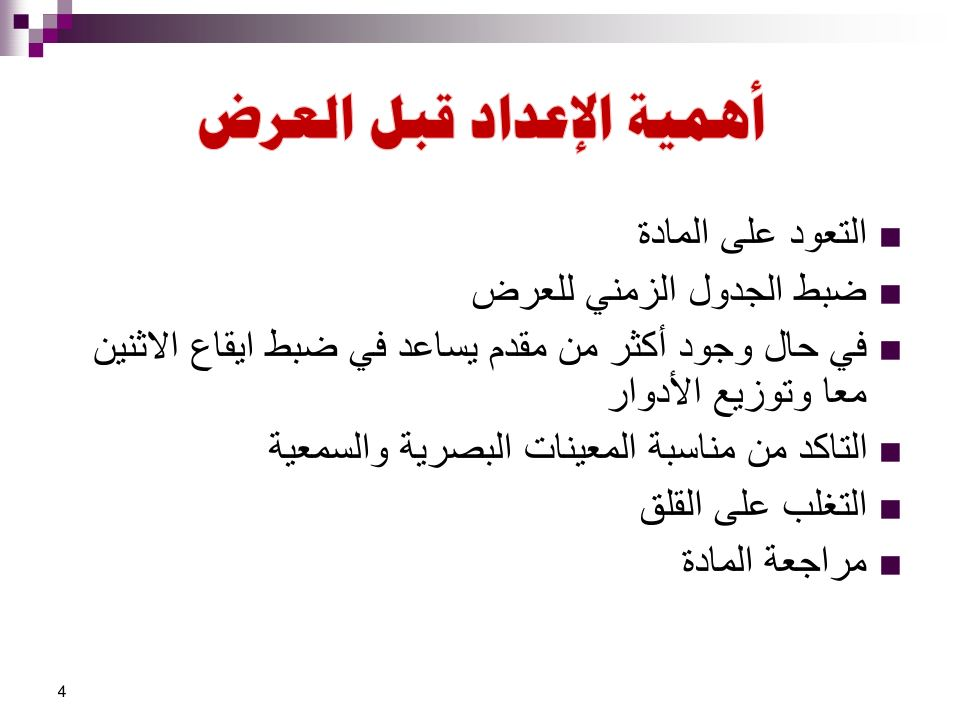
شريحة 03–04
كيف يعد مقدم العرض نفسه؟
ثلاثة أنواع من الإعداد تصنع مقدم عرض واثقًا ومتمكنًا:
- إعداد نفسي
- إعداد عقلي وتدريب جيد
- إعداد بدني
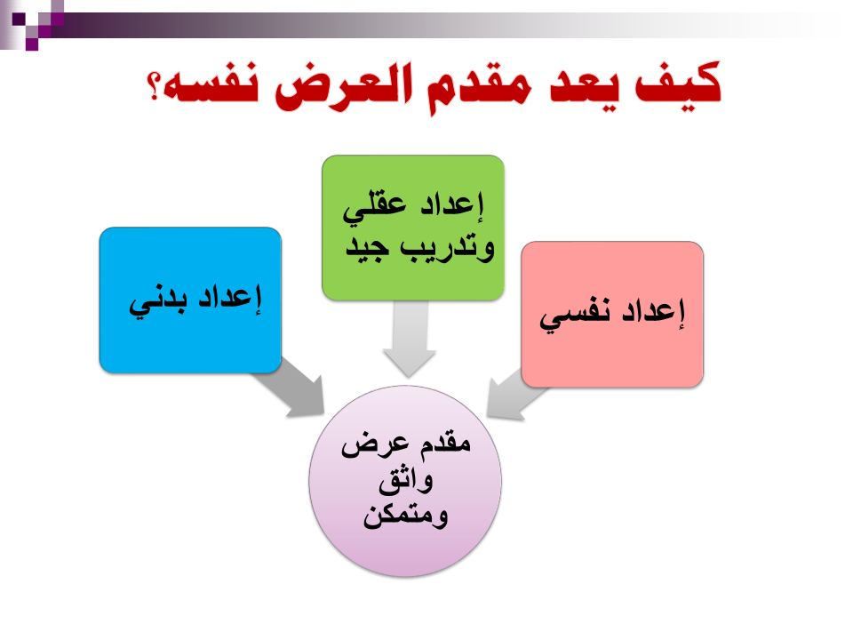
شريحة 05
اعرف جمهورك: اسأل نفسك
سبعة أسئلة عن الجمهور قبل العرض:
- من هم؟
- لماذا أتوا؟
- ماذا يتوقعون؟
- كيف أجذب انتباههم؟
- متى يملون؟
- كيف يتذكرون؟
- كيف يستقبلون المعلومات؟
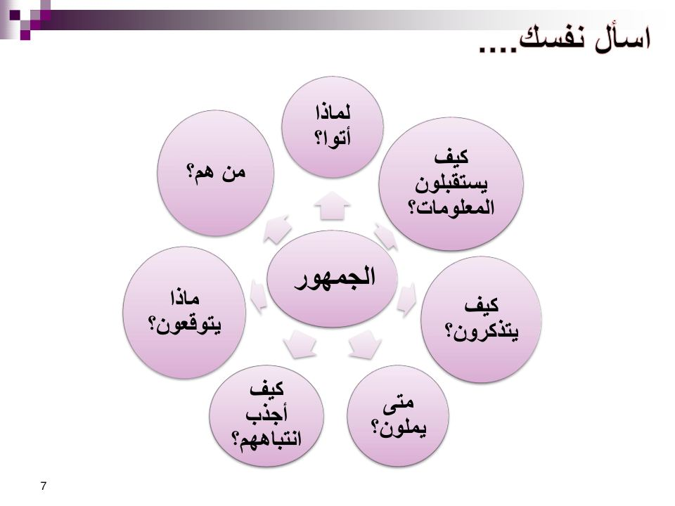
شريحة 06–07
طرق استقبال المعلومات: «نحن مختلفون»
الجمهور لا يستقبل المعلومات بطريقة واحدة. ثلاثة أنماط، ولكل نمط طريقة تعامل:
| النمط | كيف تتعامل معه |
|---|---|
| A «الباحثون عن التفاصيل» | وفّر تفاصيل وصورا للتأمل · مطبوعات مفصلة وقائمة مراجع |
| B «جرب كي تتعلم» | وفّر صورا معبرة وأشكالا للشرح · وفّر تطبيقات عملية |
| C «اسمح لي أن أناقش» | اسمح بالأسئلة وتقبّل الحماس · توقع نقاشا معك ومع الآخرين |
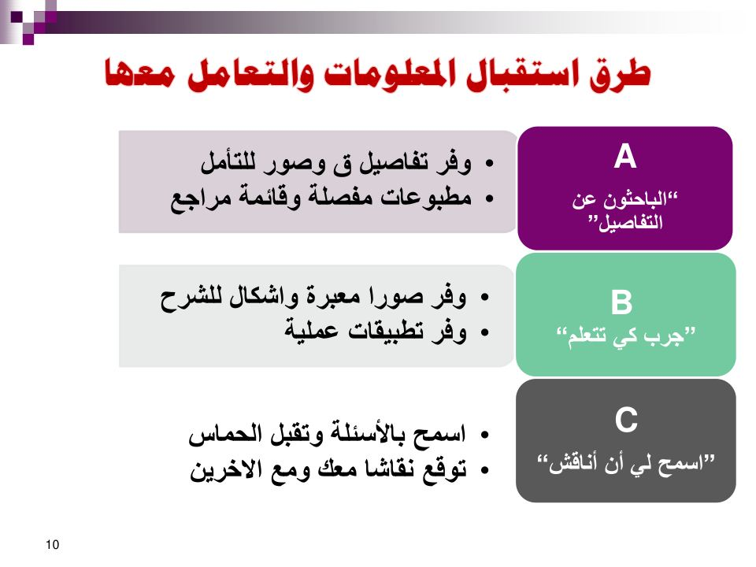
شريحة 08–10
مستويات الذاكرة: كيف نيسر التذكر؟
| مستوى الذاكرة | كيف تصل إليه |
|---|---|
| المدى القصير جدًا | استخدم صورا · أعد الكلام 3 مرات (بداية ووسط المحتوى وخاتمته) |
| المدى القصير | استخدم أمثلة ومقارنات · اعرض خبرة شخصية لها علاقة بالموضوع |
| المدى المتوسط | الأسئلة · عروض الفيديو واللوحة القلابة |
| المدى الطويل | يحتاج إلى أيام · ادعُ إلى متابعة الموضوع بكتابة مصادر أو مراجع |
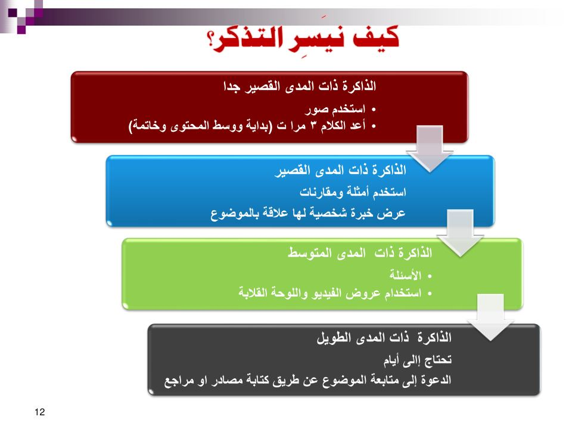
شريحة 11–12
أهم ما يجب حفظه
- أهمية الإعداد ست: التعود على المادة، ضبط الجدول الزمني، ضبط إيقاع وتوزيع الأدوار عند وجود أكثر من مقدم.
- وتكملتها: التأكد من مناسبة المعينات البصرية والسمعية، التغلب على القلق، مراجعة المادة.
- إعداد المقدم نفسه ثلاثة: نفسي، عقلي وتدريب جيد، بدني ← مقدم واثق ومتمكن.
- أسئلة الجمهور سبعة: من هم، لماذا أتوا، ماذا يتوقعون، كيف أجذب انتباههم.
- وتكملتها: متى يملون، كيف يتذكرون، كيف يستقبلون المعلومات.
- الجمهور يستقبل المعلومات بطرق مختلفة (وليس متشابهة): A الباحثون عن التفاصيل، B جرب كي تتعلم، C اسمح لي أن أناقش.
- الذاكرة: قصير جدًا = صور وإعادة 3 مرات. قصير = أمثلة ومقارنات وخبرة شخصية.
- متوسط = أسئلة وفيديو ولوحة قلابة. طويل = أيام ومصادر للمتابعة.
زتونة المهارات
الاتصال والتواصل: التعريف والأهمية
- ما هو الاتصال؟ هو العملية التي يمكن من خلالها التعبير وتبادل الأفكار والمفاهيم والحقائق والآراء والمهارات والاتجاهات بين طرفين أو أكثر.
- أهمية الاتصال والتواصل: [غير واضح] الأفكار والتقاليد والتبادل بين الأفراد.
صفحة 1
افتح الصفحة الأصليةالتطور التاريخي للاتصال
- اللغة الشفوية
- الكتابة (الزراعة - اختراع الطباعة)
- وسائل الاتصال المختلفة (التليفون - الراديو - التليفزيون)
- الحاسب الآلي
- الأقمار الصناعية
- الإنترنت
صفحة 1
افتح الصفحة الأصليةأهداف الاتصال و أنواع الاتصالات التنظيمية
أهداف الاتصال (KSA):
- K = Knowledge
- S = Skills
- A = attitude
أنواع الاتصالات التنظيمية:
- الاتصالات الرسمية، وتنقسم إلى: الاتصالات الرأسية، الاتصالات الأفقية، الاتصالات المائلة.
- الاتصالات غير الرسمية
صفحة 1
افتح الصفحة الأصليةتدريب الكبار وتدريب الصغار
| تدريب الكبار | تدريب الصغار | |
|---|---|---|
| التسمية | المدرب يُدعى "facilitator" | المدرس يُدعى "teacher" |
| طريقة التعلم | يعتمد على نفسه | لا يعتمد على نفسه |
صفحة 2
افتح الصفحة الأصليةالإنصات الفعال
ينقسم إلى: الإنصات و الاستماع.
الوصايا العشر في الإنصات:
- توقف عن الكلام قليلًا.
- حاول أن تتبع الطرف الآخر (وامنحه فرصة أن يتكلم). [الفعل غير واضح]
- أظهر للطرف الآخر أنك ترغب في الاستماع له.
- لا تشوش على عملية الإنصات.
- ضع نفسك مكان الطرف الآخر.
- ركّز وتابع بصبر (لا تقاطع المتحدث).
- احتفظ بهدوئك (لا تغضب أو تفقد أعصابك).
- تقبل الانتقادات والاعتراضات.
- اسأل في الوقت المناسب.
- توقف عن الكلام قليلًا.
صفحة 3
افتح الصفحة الأصليةمعوقات التواصل
- اللغة الفنية
- عدم المصداقية
- ضغوط الوقت
- إدراك القيمة
- الأعباء الزائدة
- الاتصال من اتجاه واحد
صفحة 4
افتح الصفحة الأصليةمبادئ الاتصال الفعال
| السؤال | المقصود |
|---|---|
| لماذا؟ | تحديد الهدف |
| ماذا؟ | تحديد المضمون |
| من؟ | الشخص المستهدف |
| كيف؟ | الوسيلة المناسبة |
| متى؟ | الوقت المناسب |
| أين؟ | المكان المناسب |
صفحة 4
افتح الصفحة الأصليةعناصر العرض الفعال
- مقدم العرض
- محتوى مادة العرض
- الجمهور
- البيئة المحيطة
بعدها كتب: «جدول من [غير واضح] المحاضرة [غير واضح] مكتبه».
صفحة 4
افتح الصفحة الأصليةأهمية الإعداد قبل العرض
- التعود على المادة
- ضبط الجدول الزمني للعرض
- التغلب على القلق
- مراجعة المادة
كيف يعد مقدم العرض نفسه؟
- إعداد نفسي
- إعداد عقلي وتدريب جيد
- إعداد بدني
صفحة 5
افتح الصفحة الأصليةأنماط استقبال المعلومة
- الباحثون عن التفاصيل
- جرّب كي تتعلم
- اسمح لي أن أناقش
صفحة 5
افتح الصفحة الأصليةمستويات الذاكرة والتعامل معها
| مستوى الذاكرة | التعامل معها |
|---|---|
| ذات المدى القصير جدًا | استخدم صورًا وأعد الكلام 3 مرات |
| ذات المدى القصير | استخدم أمثلة ومقارنات |
| ذات المدى المتوسط | الأسئلة، واستخدم عروض الفيديو |
| ذات المدى الطويل | الدعوة إلى متابعة الموضوع |
صفحة 5
افتح الصفحة الأصليةوسائل الاتصال ونسبها
| الوسيلة | النسبة |
|---|---|
| الاتصال اللفظي | 7% |
| حركات الجسد | 55% |
| تنوع نبرة الصوت | 38% |
صفحة 6
افتح الصفحة الأصليةالاتصال اللفظي وغير اللفظي
الاتصال اللفظي:
- وضوح اللغة
- مناسبة اللغة للجماهير
الاتصال غير اللفظي:
- لغة الجسد: تعبيرات الوجه، التواصل بالعينين، وضعية الجسد، الإيماءات، المظهر
- الصوت: نغمة الصوت، مستوى الصوت، لحظات الصمت
- اللمس
- المسافات
الاتصالات غير المنظورة: ديكور المكتب، الملابس.
صفحة 6
افتح الصفحة الأصليةملخص Sheko
المحاضرة 1: الاتصال وأهدافه وتطوره
ما هو الاتصال وأهدافه؟ (مهم)
- الاتصال هو التعبير وتبادل الأفكار والآراء والمهارات بين طرفين أو أكثر بطرق وأساليب معينة، سواء منظورة أو غير منظورة.
- أهداف الاتصال: KSA = Knowledge, Skills, Attitude.
التطور التاريخي للاتصال: (مهم)
- اللغة الشفوية ثم الكتابة ثم وسائل الاتصال المختلفة (تليفون - راديو - تلفزيون) ثم الحاسب الآلي ثم الأقمار الصناعية ثم الإنترنت.
أنواع الاتصالات التنظيمية:
- الاتصالات الرسمية: رأسية، أفقية، مائلة.
- الاتصالات غير الرسمية.
صفحة 1
افتح الصفحة الأصليةالمحاضرة 2: الفرق بين تدريب الكبار وتدريب الصغار
(مهم) السؤال: وضح باختصار الفرق بين تدريب الكبار وتدريب الصغار.
| تدريب الكبار | تدريب الصغار | |
|---|---|---|
| المقدم يسمى | Facilitator | teacher, Lecturer |
| أسلوب التعليم | مستقل | معتمد |
| الخبرة | المتعلمون لديهم خبرة | المتعلمون عديمو الخبرة |
| المشاركة وتبادل الأفكار والآراء | توجد مشاركة مؤثرة وتؤدي إلى النجاح | المشاركة قليلة |
| الأهداف | مرنة ومتنوعة | محدودة |
| مصدر المعلومات | المتعلمون والمقدم مصدر للمعلومات | المقدم هو مصدر المعلومات الرئيسي |
| الوقت | يؤثر المتعلمون على الوقت | لا يؤثر المتعلمون على الوقت، ويتم التحكم في الوقت بواسطة المقدم |
صفحة 1
افتح الصفحة الأصليةالمحاضرة 3: الفرق بين الاستماع والإنصات
- الاستماع: الاستماع إلى الصوت بدون تركيز.
- الإنصات: الاستماع إلى الصوت بتركيز، وهو مهارة يمكن تنميتها من خلال التدريب والممارسة. يُستدل عليه من تعبيرات الوجه وتركيز العين، وإعطاء المتحدث فرصة للتكلم والتعبير [الكلمة الأولى غير واضحة]، ويساعد المستمع على الفهم والاستيعاب والرد المناسب.
صفحة 1
افتح الصفحة الأصليةالوصايا العشر للإنصات الجيد
السؤال: اذكر بعض الإرشادات التي يجب اتباعها لإظهار الإنصات الجيد.
- التوقف عن الكلام قليلًا
- ضع نفسك مكان الشخص المتحدث
- اسأل في الوقت المناسب
- أظهر للطرف المتحدث الاهتمام والرغبة في الاستماع
- راحة الشخص المتحدث
- تقبل الانتقادات والاعتراضات
- التركيز
- الهدوء
- عدم التشويش على عملية الإنصات
- التوقف عن الكلام قليلًا
صفحة 1
افتح الصفحة الأصليةالمحاضرة 4: معوقات الاتصال
(مهم) السؤال: اذكر أشكال معوقات الاتصال. ملاحظة بجانبه: «حفظه كفاية»، ثم سطر غير واضح [غير واضح].
- اللغة الفنية
- الاتصال في اتجاه واحد
- إدراك القيمة
- اختلاف المستوى الوظيفي
- اختلاف الإطار المرجعي
- ضغط الوقت
- الأعباء الزائدة
- عدم المصداقية
- تنقية المعلومات
- الاتصال الانتقائي
صفحة 2
افتح الصفحة الأصليةمبادئ الاتصال الفعال
(مهم) الاتصال الفعال بين طرفين يستند على مبادئ: لماذا - ماذا - كيف - من - متى - أين.
| السؤال | المقصود |
|---|---|
| لماذا | لتحديد الهدف |
| ماذا | لتحديد المضمون |
| من | الشخص المستهدف |
| كيف | الوسيلة المناسبة |
| متى | الوقت المناسب |
| أين | المكان المناسب |
صفحة 2
افتح الصفحة الأصليةعناصر الاتصال الفعال مقابل عناصر العرض الفعال
| عناصر الاتصال الفعال | عناصر العرض الفعال |
|---|---|
| مرسل | عارض |
| مستقبل | جمهور |
| رسالة أو موضوع | محتوى |
| وسيلة | بيئة |
صفحة 2
افتح الصفحة الأصليةمسؤوليات ومهام مقدم العرض (جدول مهم جدًا)
الأعمدة: مقدم العرض (نفسه) - الجمهور - محتوى مادة العرض - البيئة المحيطة.
| مقدم العرض (نفسه) | الجمهور | محتوى مادة العرض | البيئة المحيطة | |
|---|---|---|---|---|
| قبل العرض | الإعداد النفسي والعقلي والبدني والتدريب الجيد | تحليل الجمهور، واختيار المادة حسب الاحتياج | إعداد المادة وخطة بديلة، ومراجعة المادة والتدريب عليها | إعداد البيئة |
| أثناء العرض | مهارات العرض الفعال | التفاعل مع الجمهور | شرح المحتوى وليس قراءته | التعامل بحرفية (والتغلب على المشكلات) |
| بعد العرض | تقييم الذات ومعالجة الأخطاء | توفير طرق للتواصل | توفير ملخصات ومراجع | إعادة النظام |
صفحة 2
افتح الصفحة الأصليةالمحاضرة 5: أهمية الإعداد قبل العرض وكيف يعد المقدم نفسه
أهمية الإعداد قبل العرض:
- التعود على المادة
- مراجعة المادة
- ضبط الجدول الزمني (تنظيم الوقت)
- التغلب على القلق والتوتر
- توزيع الأدوار في حالة وجود أكثر من مقدم للعرض
- التأكد من مناسبة المعينات السمعية والبصرية
كيف يعد مقدم العرض نفسه؟ يجب أن يعد نفسه بدنيًا ونفسيًا وعقليًا، ويتدرب جيدًا حتى يصبح واثقًا ومتمكنًا.
صفحة 2
افتح الصفحة الأصليةطرق استقبال المعلومات والتعامل معها
| نمط المتلقي | كيف تتعامل معه |
|---|---|
| 1- الباحثون عن التفاصيل | توفير تفاصيل وصور للتأمل، وتوفير مراجع ومطبوعات مفصلة |
| 2- جرّب كي أتعلم | توفير صور معبرة [غير واضح] الشرح، وتوفير تطبيقات عملية |
| 3- اسمح لي أن أناقش | السماح بالأسئلة وتقبل الحماس، وتوقع نقاشًا فعالًا مع الآخرين |
صفحة 2
افتح الصفحة الأصليةماذا يجب أن يعرف المقدم عن جمهوره قبل العرض؟
- من هم؟
- لماذا أتوا؟
- ماذا يتوقعون؟
- متى يملّون؟
- كيف أجذب انتباههم؟
- كيف يتذكرون؟
- كيف يستقبلون المعلومات؟
صفحة 2
افتح الصفحة الأصليةمستويات الذاكرة وطرق التذكر
| مستوى الذاكرة | طريقة التذكر |
|---|---|
| 1) ذات المدى القصير جدًا | استخدام صور؛ إعادة الكلام 3 مرات (بداية ووسط المحتوى وخاتمته) |
| 2) ذات المدى القصير | استخدام أمثلة ومقارنات |
| 3) ذات المدى المتوسط | عرض خبرة شخصية أو تجربة لها علاقة بالموضوع؛ الأسئلة؛ استخدام عروض الفيديو واللوحة القلابة |
| 4) ذات المدى الطويل | تحتاج إلى أيام؛ الدعوة إلى متابعة الموضوع عن طريق كتابة مصادر أو مراجع |
صفحة 3
افتح الصفحة الأصليةالمحاضرة 6: المعارف التي يجب أن يلم بها المقدم
معارف:
- عن مهارات العرض
- عن موضوع العرض
- عن موضوعات مرتبطة بالعرض
- معارف عامة
صفحة 3
افتح الصفحة الأصليةخطوات تحضير محتوى عرض تقديمي (مهم جدًا)
- تحديد الهدف من العرض التقديمي (SMART)
- تحديد الأفكار ودراستها جيدًا
- تصميم المحتوى (مقدمة - صلب الموضوع - خاتمة)
- تحديد المعينات السمعية والبصرية المناسبة
- تصميم أساليب التشويق وتحضير أساليب تذكر العرض
- كتابة المادة ومراجعتها والتدريب عليها
للحفظ (مكتوبة على الجانب): أهداف - أفكار - تصميم محتوى - معينات - أسلوب - كتابة ومراجعة.
صفحة 3
افتح الصفحة الأصليةبعض البدائل (إذا تعطلت التقنية)
مكتوب بجانب العنوان سطر قصير [غير واضح].
- اطبع مادة الشرائح على ورق قبل الذهاب
- خذ معك الحاسب الآلي الخاص بك
- خزن العرض التقديمي على أكثر من وسيلة (Flash memory - أسطوانة)
- خذ أقلام سبورة لاستخدام السبورة في حال تعطل الحاسب الآلي
صفحة 3
افتح الصفحة الأصليةمسؤوليات المقدم نحو البيئة المحيطة
- استعلم عن المكان وأسهل طرق الوصول
- قم بزيارة المكان قبل يوم العرض
- تأكد أن المكان مجهز من حيث الإضاءة - التهوية - الصوت
- معرفة المعينات البصرية والسمعية المتاحة، وهل تعمل بكفاءة
- هل تستوعب المساحة المتاحة عدد الجمهور؟
صفحة 3
افتح الصفحة الأصليةالمحاضرة 7: مسؤوليات المقدم أثناء العرض
- صناعة انطباع أول جيد
- التفاعل مع الجمهور
- جذب انتباه المشاركين
- تقديم العرض بشكل جيد
كيف تصنع انطباعًا أول جيدًا؟
- مظهر مهندم مناسب بلا مبالغة
- التعريف بنفسك
- إظهار الحماس
- الأداء بثقة
- الهدوء [الباقي غير واضح]
صفحة 3
افتح الصفحة الأصليةكيف تتفاعل مع الجمهور؟ وكيف تجذب انتباهه؟
التفاعل مع الجمهور:
- خلق ألفة مع الجمهور
- الاتصال غير اللفظي
- معدل الصوت وvoice tone
- مشاركة الجمهور
- إلقاء الأسئلة
- سطر آخر [غير واضح] ("مع ما يستجد")
جذب انتباه الجمهور:
- في البداية: افتتاحية قوية
- أثناء العرض: كسر الرتابة والملل
طرق جذب انتباه الجمهور:
- استخدام الدعابة [الكلمة غير مؤكدة]
- القصص
- التشبيهات
- إحضار نماذج ليراها الحضور ويمسكوها
صفحة 3
افتح الصفحة الأصليةالمحاضرة 8: التعامل مع النماذج الصعبة (12 نقطة)
السؤال: كيف يتعامل المقدم مع النماذج الصعبة؟
- دراسة أنماط الشخصيات الصعبة
- تحديد طرق للتعامل مع الشخصيات المختلفة
- التعرف على طرق مختلفة لوقف وتجنب المواجهات العنيفة
- التغلب على القلق
- اعرف قيمة نفسك
- تجنب المشاكل الناتجة عند الإصرار على تنفيذ [غير واضح] صحيحة من وجهة نظرك
- تجنب تأجيل المواجهة
- التعبير عن التعاطف مع أفكارهم، وليس من الضروري الموافقة عليها
- المحافظة على الهدوء
- اختيار استراتيجية الحل الوسط
- المحافظة على موقف إيجابي
- بناء الجسور بدلًا من الجدران
صفحة 4
افتح الصفحة الأصليةبعض الشخصيات الصعبة التي يواجهها المقدم
- كثير الكلام
- كثير الهرج والهزار
- كثير الأسئلة
- الغير متفاعل
- الباحث عن الأخطاء
صفحة 4
افتح الصفحة الأصليةالمحاضرة 9: وسائل الاتصال
| النوع | النسبة |
|---|---|
| اتصال لفظي | 7% |
| اتصال غير لفظي: حركات الجسد | 55% |
| اتصال غير لفظي: تنوع نبرة الصوت | 38% |
الاتصال اللفظي: يعتمد على استخدام لغة التكلم أو الكتابة. متطلباته: وضوح اللغة، ومناسبة اللغة للجمهور.
الاتصال غير اللفظي: يعتمد على استخدام لغة الجسد. متطلباته:
- لغة الجسد: تعبيرات الوجه، التواصل بالعينين، حركة الجسد [الكلمة غير مؤكدة]، وضعية الجسد، المظهر، الإيماءات
- الصوت: نغمة الصوت، مستوى الصوت، لحظات الصمت
- اللمس
- المسافات
صفحة 4
افتح الصفحة الأصليةلغة الجسد (1): المظهر والعينان والحركة
- المظهر: مظهر مهندم مناسب بلا مبالغة
- التواصل بالعينين:
- توزيع التواصل بالعينين على الجمهور بالتساوي
- عدم النظر لفترات طويلة لشخص محدد
- عدم النظر لجانب واحد دون الآخر
- لا تفقد التواصل بالنظر للشاشة والكتابة لفترات طويلة
- الحركة:
- الحركة المقبولة على المسرح لتزيد التركيز
- تجنب الحركة المترددة
- تجنب اللوازم الحركية
صفحة 4
افتح الصفحة الأصليةلغة الجسد (2): الأيدي وتعبيرات الوجه
- التواصل بالأيدي:
- حركة اليدين فوق مستوى الوسط
- اليد مفتوحة والأصابع متقاربة
- تجنب الإشارة بإصبع
- التنويع بالإشارة باليدين
- تجنب الحركات السريعة العصبية
- تعبيرات الوجه: الابتسامة، رفع الحواجب، الدهشة، الملل، الغضب والعصبية، الاهتمام والعناية
صفحة 4
افتح الصفحة الأصليةالصوت والمسافات والاتصالات غير المنظورة
الصوت:
- تجنب انخفاض الصوت في بداية العرض
- استخدام لغة واضحة وسليمة
- تنوع في طبقة الصوت
- الصمت لحظات لإعطاء فرصة للجمهور للاستيعاب
- تجنب اللوازم اللفظية
- تأكد من وصول الصوت بوضوح، خصوصًا لآخر القاعة
- طبقة الصوت الثابتة تؤدي للشعور بالنعاس
المسافات: المنطقة الشخصية - الاجتماعية - العامة - الحميمية.
مثال على الاتصالات غير المنظورة: ديكور المكتب، الملابس.
صفحة 4
افتح الصفحة الأصليةأسئلة متنوعة: الأسئلة أثناء الإنصات وأساليب العرض
طرح الأسئلة أثناء عملية الإنصات قد يكون سلبيًا أو إيجابيًا، حسب طريقة السؤال:
- إذا كان غرض السؤال إفادة الشخص وليس إحراجه، تكون الإجابة إيجابية.
- إذا كان غرضه جذب الانتباه والإحراج، تكون سلبية.
أساليب العرض المختلفة في الأعداد الصغيرة: ورش عمل تطبيقية، بريزنتيشن صغير، مناقشة.
صفحة 5
افتح الصفحة الأصليةتنظيم قاعة العرض (شكل الكراسي)
- محاضرة: المقدم في المقدمة والكراسي صفوف متراصة أمامه.
- مناقشة في موضوع معين للمجموعة: مجموعة صغيرة حول طاولة.
- عرض صغير (سكشن): المقدم والكراسي في شكل مربع أو حدوة حول المقدم.
صفحة 5
افتح الصفحة الأصليةملاحظات تصميم الشرائح
يجب مراعاة:
- تناسق الألوان في الشرائح
- حجم الخط
- استخدام الأشكال والصور والفيديوهات التوضيحية
- الاستعانة بالمؤثرات الحركية
- تسلسل صحيح للموضوع من حيث المقدمة وصلب الموضوع والخاتمة
صفحة 5
افتح الصفحة الأصليةتوزيع الأدوار في المجموعة
السؤال: عند الاشتراك بمجموعات عمل خلال الدراسة، وضح طرق توزيع الأدوار على أفراد المجموعة.
- Leader (القائد)
- Presenter (المقدم)
- timer (ضابط الوقت)
- writer (الكاتب)
صفحة 5
افتح الصفحة الأصليةعناصر الخاتمة في العرض الفعال
- ملخص الموضوع
- الأسئلة
- شكر الجمهور
- المراجع
- طرق التواصل
صفحة 5
افتح الصفحة الأصليةعناصر المقدمة في العرض الفعال وهدفها
- الترحيب بالحضور
- التعريف بالنفس لمقدم العرض وبالأعضاء المشاركين في عمل العرض
- مجموعة من القواعد والتعليمات
- اسم الموضوع والمحتوى
- أخذ توقعات الحضور بخصوص الموضوع
- عرض أهم الأفكار التي يتناولها الموضوع
صفحة 5
افتح الصفحة الأصليةالعصف الذهني مقابل المناقشة
| العصف الذهني | المناقشة | |
|---|---|---|
| التعريف | استقبال الآراء والأفكار | استقبال الآراء والأفكار |
| الكتابة | مع مراعاة كتابتها | يمكن أن تكون شفهية ولا يشترط كتابتها |
| التعليق | عدم التعليق عليها، سواء كانت صحيحة أو خاطئة | يجب التعليق عليها ومناقشتها والتعديل عليها إذا كانت خاطئة |
صفحة 5
افتح الصفحة الأصليةشروط المناقشة
- سؤال عام غير محدد لشخص معين
- وجود خلفية عند الجمهور عن هذا الموضوع
- عدم الإحراج
- النقاش يحدد بوقت
- تعليقات إيجابية على الردود
- تكون الأهداف مرنة
صفحة 5
افتح الصفحة الأصليةخارج ما عندك
أسئلة في الامتحانات لا تغطيها المحاضرات ولا الملخصات التي عندك. ربما توجد محاضرة ناقصة.
ملاحظات على المصادر
مواضع كانت فيها إجابة أو علامة أو نص خاطئ أو غير واضح. الصفحة تستخدم الإجابة المصححة.